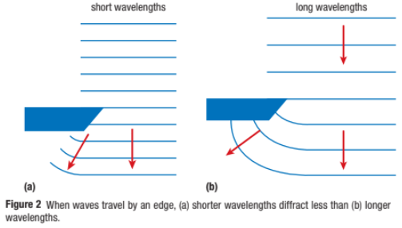
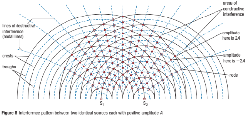

Diffraction and Interference of Water Waves
Have you ever noticed how people relaxing at the seashore spend so much of their time watching the ocean waves moving over the water, as they break repeatedly and roll onto the shore?

Diffraction
Diffraction is the bending and spreading of a wave when it passes through an opening; dependent on the size of the opening and the wavelength of the wave.
As the wavelength increases, the amount of diffraction increases.

Interference
Interference is the phenomenon that occurs when two waves in the same medium interact.

Constructive interference is the phenomenon that occurs when two interfering waves have displacement in the same direction where they superimpose.

Destructive interference is the phenomenon that occurs when two interfering waves have displacement in opposite directions where they superimpose.

Node is a point along a standing wave where the wave produces zero displacement.
A nodal line is a line or curve along which destructive interference results in zero displacement.

Mathematics of Two-Point-Source Interference
Path length is the distance from point to point along a nodal line.

Watch this video: